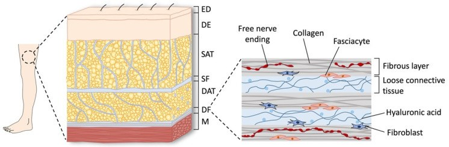
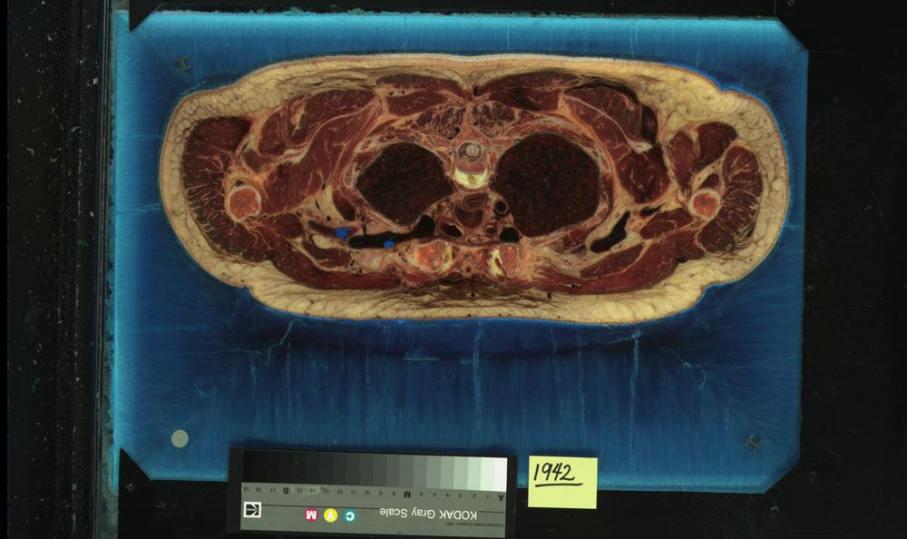
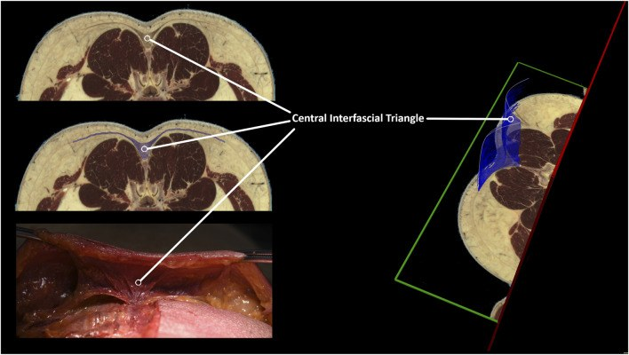
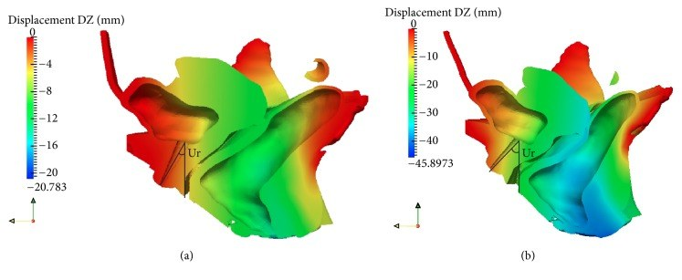
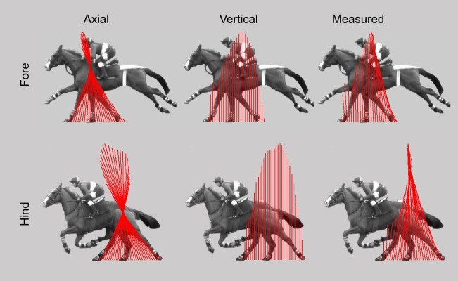
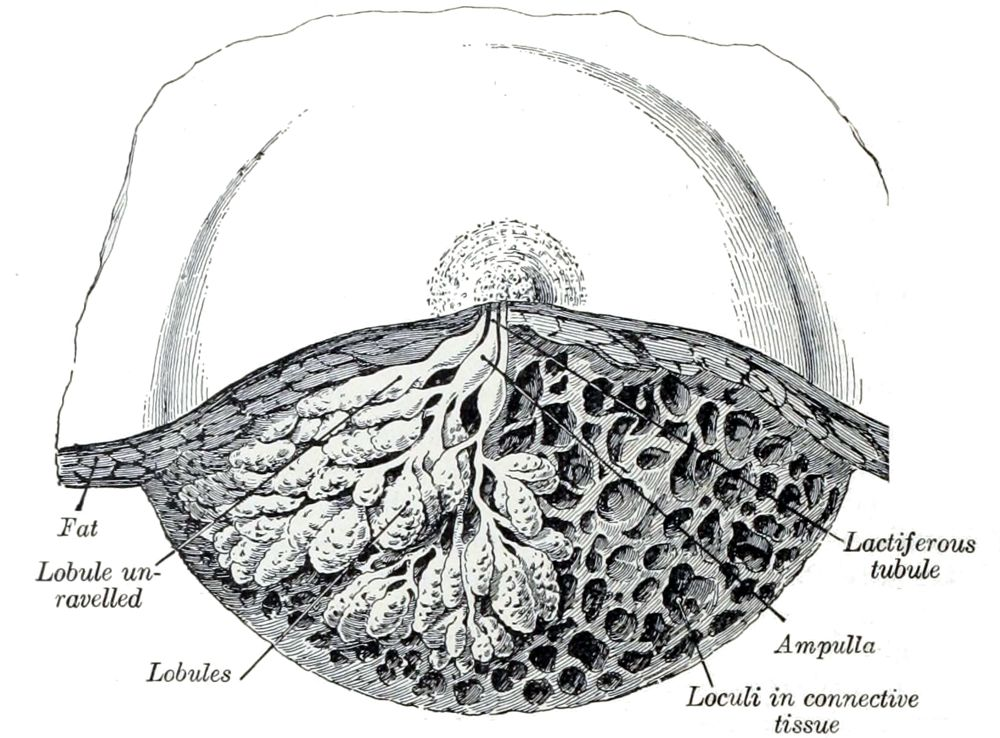
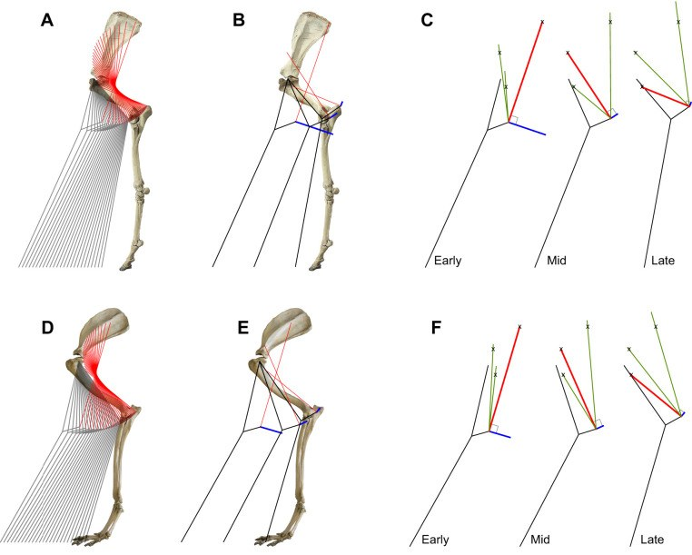

The data a model of the ideal body needs
A team of AI research agents gathered research, anatomy, measurements, images, and films from around the world into a private research library, checked every item, and recorded where it came from and what may be done with it.
Exact figures as of 18 November 2026. The library grows every day.
What is in it so far
Twelve datasets
Every item we collect is tagged with the datasets it serves. Together they are the raw material for the model of the ideal body, its imperfections, and the experience of living in it.
They run from the skeleton outward: bones, the connective tissue web (often called fascia) around them, everything embedded in that web, how it moves, what it is made of, and how it goes wrong. The datasets steer the collection: each round, the agents are sent toward whichever is thinnest.

D1Skeleton
The exact 3D shape of every bone, male and female, and where each sits in space.
From: the Visible Human sections and CT; BodyParts3D and Z-Anatomy 3D models; TotalSegmentator and AMOS22 labeled scans; OpenSim models; the osteology of Gray, Quain, and Testut.
D2Connective tissue network
The continuous connective-tissue web: its layers, thickness, attachments, and continuity.
From: the connective tissue literature of the Padua, Ulm, and Frankfurt groups and others through PubMed Central and Europe PMC; full texts from the Semantic Scholar copy; Japanese and Korean physical-therapy research; thoracolumbar fascia ultrasound data; pre-1931 monographs on aponeuroses.
D3Contents of connective tissue
Organs, vessels, nerves, skin, fat, and hair follicles: their shapes, depths and spacing.
From: the Visible Human sections; labeled organ scans; 64,314 skin and hair image files; vascular and nerve anatomy from atlases and papers.
D4Range of motion
Joint limits, yoga poses, contortion, and extreme movement.
From: CMU motion capture; PhysioNet and Kuopio gait databases; OpenCap and OpenSim; 55,133 images and films of elite movers; sport federation video catalogs.
D5Mechanics, atoms to body
Shear, stress, tension, friction, and stretch for every tissue.
From: tendon, connective tissue and force-transmission datasets on Dryad; tissue physics from arXiv; high-density muscle-signal recordings from PhysioNet; published material tests of human tissue.
D6Reference bodies
Heights, proportions, and distances by sex and population.
From: the U.S. Army ANSUR II survey; Size Korea, with 6,410 people measured 148 ways; the DINED anthropometry database; 19,431 anthropometry files in all.
D7Imperfections
A measurable list of the ways the ideal body can deviate: densification, scarring, posture, fat, injury.
From: clinical and imaging research on adhesion, fibrosis, contracture, and posture; and the evidence that cuts against the model, read and recorded with a verdict for each study.
D8Nervous system
How the body's physics becomes sensation: receptors, thresholds, interoception, pain, and touch.
From: research on the nerves within connective tissue, interoception and pain science, and the work of Friston and others on how the brain models the body.
D9Mental health
Psychology and psychiatry, stress and trauma in the body, posture and emotion.
From: psychiatric and psychological literature, the history of psychiatry, and studies linking body and mood. Being expanded now. Mental health today →
D10Disease shapes
Images and measurements of people living with specific conditions.
From: NIH chest X-rays (ChestX-ray14); captioned medical images (ROCOv2); spine MRI and X-ray sets; the literature on conditions that change the body's shape, such as ankylosing spondylitis.
D11Development
How the body grows from embryo to adult.
From: embryology and the founding "mechanics of development" literature (Roux's Archiv, from 1894); growth surveys of children aged 7 to 19; fetal and scoliosis studies.
D12Mind and traditions
Theories of consciousness, and the contemplative and body traditions that have studied it longest.
From: theories of consciousness and their critics; 9,949 tradition texts: Sanskrit from GRETIL and SARIT, Chinese classics from Wikisource, yoga, Ayurveda, Tamil Siddha, and osteopathy books from the Internet Archive and Europe PMC.
Two complete copies of the world's research
Most research projects search the literature one query at a time, through someone else's website and daily limits. We downloaded two complete, openly licensed copies of the scholarly record and search them on our own hardware.
241,023,138 papers
The full public release of 10 November 2026: 928 files, 851 GB. It holds the metadata of 241,023,138 papers, 51,361,566 abstracts, the complete citation graph linking them, and the full texts of the openly licensed papers. From it our agents have already pulled 15,419 full-text papers on connective tissue, tensegrity, and tissue mechanics into the library, and built a catalog of 141,810 relevant records.
What the papers are about: every discipline, not only physics or medicine. Medicine is the largest field, followed by engineering, environmental science, biology, computer science, and physics, with the humanities and social sciences well represented. Papers per field, by the first field Semantic Scholar assigns:
Then business 3.5M, mathematics 3.2M, economics 3.1M, political science 2.7M, sociology 2.7M, law 2.3M, geology 1.7M, philosophy 1.7M, art 1.6M, linguistics 1.3M and geography 0.5M. 151.0 million papers carry a field label; 90.0 million carry none. Counted on our own machines from the release.
License: ODC-BY. Citation graph: every "who cites whom" link, so we can follow any idea forward and backward through the literature.
A map to the whole scholarly record
The complete OpenAlex snapshot of 14 October 2026: 755.5 GB. It is not the papers themselves. It is a map to them: a record for every known scholarly work, with who wrote it, where they worked, where it was published, what it cites and who cites it, its topics and language, its abstract when one is available, and links to where the full text can be read, including the free copy when one exists.
With it, our agents have a compass to the entire scholarly record: they can see what exists on any question, in any language, before fetching a single paper, and go straight to the open copies.
License: CC0. Used to find what exists in Chinese, Russian, Japanese, Portuguese, and dozens of other languages, and which institutions study what.
A complete male and female body, section by section
The U.S. National Library of Medicine's Visible Human Project sectioned a male and a female body into thin slices and photographed each one. We hold the complete set: 79,224 files, 395.7 GB, every file size-checked against its source.
- Cross-section photographs: 9,808 male and 12,545 female images in full resolution, head to foot.
- Full-color and 70 mm film scans of the same sections, at the highest detail the project produced.
- Radiological images: CT and MRI of both bodies before sectioning.
- Visible Human 2.0 data from later reprocessing of the original sections.
These two bodies are the scaffold for the 3D model. Each slice shows bone, muscle, fat, organs, vessels, and the connective tissue between them, in place. Around that scaffold, papers and measurements from reputable sources supply what a single body cannot: the range of human sizes, the mechanics of each tissue, and how bodies move.


From slices to a working model
We use these sections to determine what tissue is where: which bone, muscle, fat, organ, vessel, and connective tissue layer occupies each point in the body. Stacked in order, the slices give the 3D layout the model is built on. Onto that layout we apply physics, mathematics, and the measured characteristics of every tissue: stiffness, stretch, shear, friction, and compression limits.
Papers tell us what each tissue looks like and how it behaves when it is optimized, and what its physics is. From there we decide what it would look like, and how it would behave, if it were made imperfect. The two figures below show the same steps in published research: a connective tissue structure traced on a Visible Human section and rebuilt in 3D, and a connective tissue model run with healthy and with weakened tissue.


55,133 images, films, and books of the body
46,354 images, 2,924 videos, and 943 illustrated books, each with its source and license recorded. They show what the human body can do at its best, and how it has been drawn and studied for centuries.
By subject
Largest subjects shown; the rest are other sports, research videos, and medical art.
By source
Movement data
Beyond pictures: the Carnegie Mellon University motion-capture library; gait databases from PhysioNet (MIT), the University of Kuopio, and others; rehabilitation movements (UI-PRMD); OpenSim musculoskeletal models from Stanford (1,066 files); and high-density muscle-signal recordings from PhysioNet (57,501 files). A further 140,564 videos from 39 reputable channels, including sport federations, are catalogued for later review.




The authors and institutions behind the library
Documents in the library by author.
- Carla and Antonio Stecco, University of Padua: 204 works
- Carmelo Pirri, University of Padua: 167
- Robert Schleip, Ulm and Munich: 83
- Jan Wilke, Frankfurt: 44
- Helene Langevin, University of Vermont and NIH: 16
- Peter Huijing, VU Amsterdam: 9
- Donald Ingber, Harvard: 8
- Karl Friston, University College London: 85 works
- Giulio Tononi, University of Wisconsin: 21
- David Chalmers, New York University: 12
- Jones Quain: 78
- Xavier Bichat: 73
- John Bell: 57 · Jacob Henle: 52
- Carl Gegenbaur: 49 · Constant Sappey: 48
- Charles Bell: 47 · Henry Gray: 47
- Jean Cruveilhier: 45 · Léo Testut: 38
- Étienne-Jules Marey: 34
- Frontiers: 12,437 · MDPI: 10,995
- PLOS: 9,502 · Elsevier: 8,062
- BMC: 7,757 · Nature Portfolio: 5,263
- Wiley: 5,804 · Springer: 4,827
- Wolters Kluwer: 2,811 · Hindawi: 2,266
- SAGE: 1,915 · Oxford University Press: 1,882
- SciELO: 1,795 · bioRxiv and medRxiv: 1,547
- BMJ: 1,023 · Royal Society: 557
- PNAS: 525 · American Physical Society: 493
- Science: 427 · eLife: 326
U.S. National Library of Medicine (Visible Human Project, PubMed Central) · Europe PMC · Semantic Scholar (Allen Institute for AI) · OpenAlex · arXiv (Cornell University) · Internet Archive · Library of Congress · Wellcome Collection · Royal College of Surgeons of England · Carnegie Mellon University · PhysioNet (MIT) · Stanford OpenSim · J-STAGE (Japan Science and Technology Agency) · KoreaScience (KISTI) · Size Korea (Korean Agency for Technology and Standards) · SciELO (Latin America) · DiVA (Swedish universities, including KTH) · DergiPark (Turkey) · GRETIL (University of Göttingen, Sanskrit texts) · SARIT · Wikisource · Zenodo (CERN) · Figshare · Dryad · Kaggle · Wikimedia Commons.
How it is gathered, and checked
A team of AI research agents works in rounds, around the clock. Each round, a planning council reviews what came in, measures it against the twelve datasets, and sends the next agents toward what is still missing. An independent auditor checks the council's plan for errors, and two outside AI systems from other companies review it for blind spots.
- Checked on arrival. Files are verified against their source by checksum or size; 30 Visible Human images chosen at random were fully decoded with zero errors.
- Checked for relevance. Before any collection grows, a blind sample of 20 items is read and judged. Below 80% on topic, the search is narrowed before continuing.
- Checked for rights. Every document carries its license and what it may be used for: 84,604 can be published, 18,293 for non-commercial use, 61,215 quoted only.
- Checked against us. One agent's job is to find work that contradicts the model and record it fairly. 36 real counter-findings have been read so far, each with its verdict.
Building the collection further
Open sources come first: open-access journals, preprint servers, university repositories across Europe, Asia, and the Americas, public anatomy collections, research data archives, and historic books in the public domain.
We are purchasing books and other materials: the anatomy atlases, connective tissue texts, measurement standards, and key papers that open access does not reach.
How it will be used
To build the model. The Visible Human sections become a 3D body; papers and measurements give every tissue its real dimensions and mechanics. To measure. Computer vision models read the images for distances, angles, and patterns. To answer. Local AI models index everything, so any question can be answered from the evidence, including the evidence against us. The road ahead →
The library is a private research collection used to build and test the model. It is not redistributed.
The library holds what a model of the ideal human body needs: published research, anatomy, tissue measurements, medical images, and films of bodies in motion. Each item is checked and recorded with its source. Among the largest pieces are the Visible Human files, a complete male and a complete female body, section by section, from which the project is rebuilding the body bone by bone and tissue by tissue.